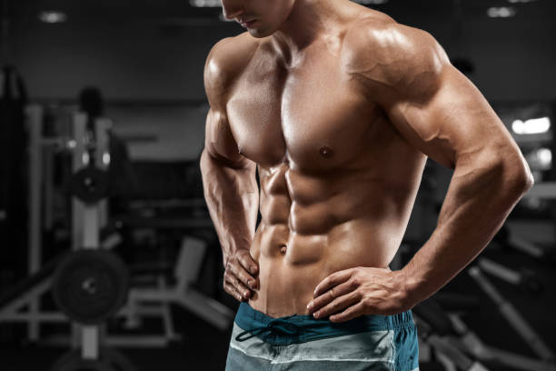
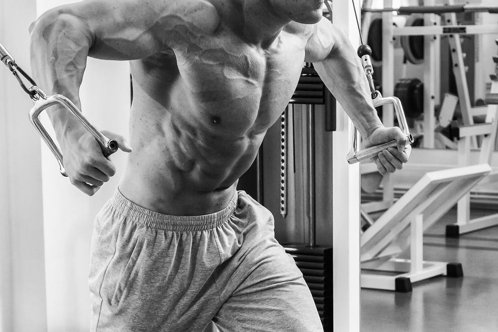
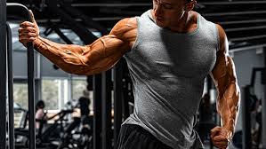

Turns out abs really are built in the kitchen. While most of us focus on the fitness side of body transformations by hiring a personal trainer, learning more ab exercises to work our core muscles (like the endless leg raises, mountain climbers, and planks), and hitting the gym more days a week, we may be putting our efforts in the wrong place.
Abdominal muscles or “abs” consist of four main muscle groups combined to cover your internal organs around your midsection - this is also commonly referred to as your core.
One of the best exercises for the chest, the straight arm plank focuses on the entire upper body. By the end of this exercise, your chest, shoulders, abdomen, and hips may all start burning. To get into the position, lie down on your stomach with palms placed on the floor, by the side of your chest.
Abdominal muscles or “abs” consist of four main muscle groups combined to cover your internal organs around your midsection - this is also commonly referred to as your core.
for you want a bicep workout that is specifically targeted, it's time to start learning different curls. The biceps assist in several lifts essential to strength sports. For example, bicep exercises are crucial for Olympic weightlifters since deadlifts, snatches, and cleans all stimulate these muscles because they aid in pulling. A few biceps exercises you can try
Remember that all pulling motions indirectly work the biceps. Keeping this in mind, you cannot pre-fatigue your biceps and have an adequate back workout. You need full recovery time for all muscle groups.
